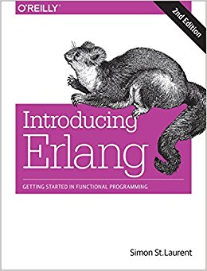
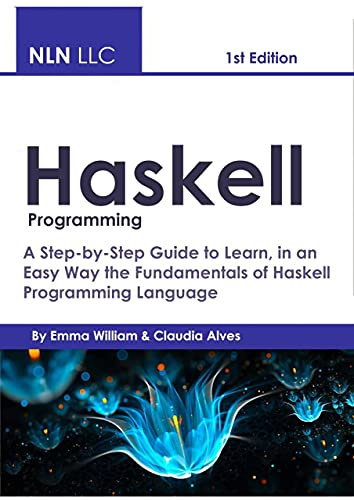
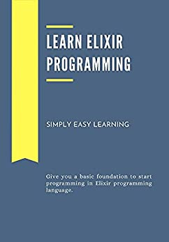

Scala (/ˈskɑːlə/ SKAH-lah)[8] is a strong statically typed high-level general-purpose programming language that supports both object-oriented programming and functional programming. Designed to be concise,[9] many of Scala's design decisions are aimed to address criticisms of Java.[7]
Scala source code can be compiled to Java bytecode and run on a Java virtual machine (JVM). Scala can also be compiled to JavaScript to run in a browser, or directly to a native executable. On the JVM Scala provides language interoperability with Java so that libraries written in either language may be referenced directly in Scala or Java code.[10] Like Java, Scala is object-oriented, and uses a syntax termed curly-brace which is similar to the language C. Since Scala 3, there is also an option to use the off-side rule (indenting) to structure blocks, and its use is advised. Martin Odersky has said that this turned out to be the most productive change introduced in Scala
In 1996, due to the bankruptcy of Commodore, Scala left the Amiga platform and started delivering the same applications under MS-DOS. Scala Multimedia MM100, Scala Multimedia Publisher and Scala InfoChannel 100 were released for the x86 platform. Scala MM100 won Byte Magazine's "Best of Comdex" in 1996. 𝐑𝐞𝐚𝐝 𝐦𝐨𝐫𝐞..
buy scala at Amazon

Erlang (/ˈɜːrlæŋ/ UR-lang) is a general-purpose, concurrent, functional high-level programming language, and a garbage-collected runtime system. The term Erlang is used interchangeably with Erlang/OTP, or Open Telecom Platform (OTP), which consists of the Erlang runtime system, several ready-to-use components (OTP) mainly written in Erlang, and a set of design principles for Erlang programs.[4]
The Erlang runtime system is designed for systems with these traits:
Distributed
Fault-tolerant
Soft real-time
Highly available, non-stop applications
Hot swapping, where code can be changed without stopping a system.[5]
The Erlang programming language has immutable data, pattern matching, and functional programming.[6] The sequential subset of the Erlang language supports eager evaluation, single assignment, and dynamic typing.
A normal Erlang application is built out of hundreds of small Erlang processes.
It was originally proprietary software within Ericsson, developed by Joe Armstrong, Robert Virding, and Mike Williams in 1986,[7] but was released as free and open-source software in 1998.[8][9] Erlang/OTP is supported and maintained by the Open Telecom Platform (OTP) product unit at Ericsson. 𝐑𝐞𝐚𝐝 𝐦𝐨𝐫𝐞..
buy Erlang at Amazon

Haskell (/ˈhæskəl/[25]) is a general-purpose, statically-typed, purely functional programming language with type inference and lazy evaluation.[26][27] Designed for teaching, research and industrial applications, Haskell has pioneered a number of programming language features such as type classes, which enable type-safe operator overloading, and monadic IO. Haskell's main implementation is the Glasgow Haskell Compiler (GHC). It is named after logician Haskell Curry.[1]
Haskell's semantics are historically based on those of the Miranda programming language, which served to focus the efforts of the initial Haskell working group.[28] The last formal specification of the language was made in July 2010, while the development of GHC continues to expand Haskell via language extensions.
Haskell is used in academia and industry.[29][30][31] As of May 2021, Haskell was the 28th most popular programming language by Google searches for tutorials,[32] and made up less than 1% of active users on the GitHub source code repository.Haskell was developed by a committee, attempting to bring together off the shelf solutions where possible.Haskell was developed by a committee, 𝐑𝐞𝐚𝐝 𝐦𝐨𝐫𝐞..
buy Haskell at Amazon

Elixir is a functional, concurrent, high-level general-purpose programming language that runs on the BEAM virtual machine, which is also used to implement the Erlang programming language.[3] Elixir builds on top of Erlang and shares the same abstractions for building distributed, fault-tolerant applications. Elixir also provides tooling and an extensible design. The latter is supported by compile-time metaprogramming with macros and polymorphism via protocols.[4]
Elixir is used by companies such as Ramp,[5] PagerDuty,[6] Discord,[7] Brex,[8] E-MetroTel,[9] Pinterest,[10] Moz,[11] Bleacher Report,[12] The Outline,[13] Inverse,[14] Divvy,[15] FarmBot[16] and for building embedded systems.[17][18] The community organizes yearly events in the United States,[19] Europe,[20] and Japan,[21] as well as minor local events and conferencesJosé Valim is the creator of the Elixir programming language, a research and development project created at Plataformatec. His goals were to enable higher extensibility and productivity in the Erlang VM while maintaining compatibility with Erlang's ecosystem.Elixir was aimed at large-scale sites and apps. Elixir uses features of Ruby, Erlang, and Clojure to develop a "high-concurrency" and "low-latency" language. 𝐑𝐞𝐚𝐝 𝐦𝐨𝐫𝐞..
buy Elixir at Amazon
Copyright@2023 library Management System. All rights reseved